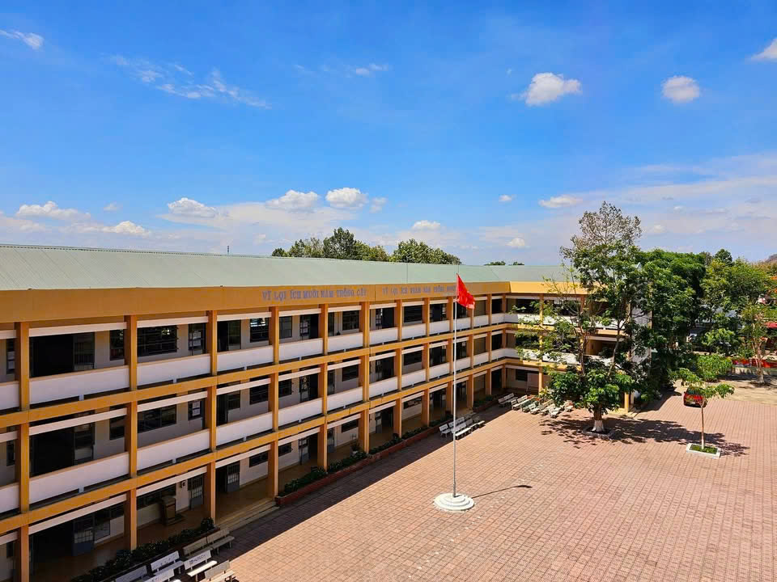

|
|
SỞ GIÁO DỤC VÀ ĐÀO TẠO ĐỒNG NAITRƯỜNG THPT TÂN PHÚ |
| Trang chủ |
|---|
| Kiến thức và pháp luật |
| Kỹ năng sống |
| Hướng nghiệp |
| Kiến thức phổ thông |
Kiến thức cốt lõi: Phổ biến Luật Giao thông đường bộ; quy định về độ tuổi và loại xe học sinh THPT được phép điều khiển; mức xử phạt đối với các lỗi phổ biến (chạy quá tốc độ, đi sai làn đường, chở quá số người quy định, lạng lách đánh võng).
Kỹ năng thực tế: Hướng dẫn đội mũ bảo hiểm đúng cách, tư thế lái xe an toàn và kỹ năng phán đoán phòng tránh rủi ro trên đường, đặc biệt là cách kiểm soát tốc độ khi di chuyển trên các tuyến đường nông thôn vào mùa mưa bão (tránh trơn trượt do rong rêu).
Kiến thức cốt lõi: Các hành vi bị nghiêm cấm theo Luật An ninh mạng; nhận diện thông tin xấu, độc, tin giả trên Internet.
Kỹ năng thực tế: Quy tắc ứng xử văn minh trên không gian mạng; cách bảo mật thông tin cá nhân và nhận biết, phòng chống các hình thức lừa đảo trực tuyến phổ biến hiện nay.
Kiến thức cốt lõi: Tìm hiểu về tác hại của ma túy (bao gồm cả ma túy đá, thuốc lá điện tử); các quy định pháp luật hình sự liên quan đến hành vi tàng trữ, sử dụng và tổ chức sử dụng trái phép chất ma túy.
Kỹ năng thực tế: Cách nhận diện hành vi bạo lực học đường (cả về thể chất lẫn tinh thần trên mạng); các kênh tiếp nhận thông tin hỗ trợ và cách xử lý tình huống khi gặp bạo lực hoặc bị lôi kéo vào các tệ nạn.
Kiến thức cốt lõi: Giới thiệu về quyền và nghĩa vụ cơ bản của công dân theo Hiến pháp; các mốc tuổi và trách nhiệm đăng ký, thực hiện Nghĩa vụ quân sự đối với học sinh nam sau khi tốt nghiệp THPT.
Kiến thức cốt lõi: Các nguyên nhân phổ biến gây ra hỏa hoạn tại trường học, gia đình và quy trình xử lý khi có cháy xảy ra.
Kỹ năng thực tế: Cách sử dụng bình chữa cháy xách tay; kỹ năng thoát nạn trong môi trường nhiều khói độc và các phương pháp sơ cứu người bị nạn cơ bản.
Kiến thức cốt lõi: Tìm hiểu về Luật Hôn nhân và Gia đình; hệ lụy của nạn tảo hôn và kết hôn cận huyết thống; các quy định pháp luật về bình đẳng giới.
Kỹ năng thực tế: Giáo dục sức khỏe sinh sản vị thành niên; phòng tránh mang thai ngoài ý muốn; xây dựng tình bạn, tình yêu tuổi học trò lành mạnh, trong sáng và kỹ năng tự bảo vệ bản thân trước các hành vi xâm hại tình dục.
Kiến thức cốt lõi: Các quy định cơ bản của Luật Bảo vệ môi trường; mức xử phạt vi phạm hành chính đối với hành vi vứt rác bừa bãi hoặc gây ô nhiễm môi trường trường học và nơi công cộng.
Kỹ năng thực tế: Thực hành phân loại rác thải tại nguồn (rác tái chế, rác hữu cơ, rác vô cơ) ngay tại lớp học; nâng cao ý thức tiết kiệm điện, nước và hạn chế sử dụng rác thải nhựa một lần.
Kiến thức cốt lõi: 4 nhóm quyền cơ bản của trẻ em (Quyền được sống còn, Quyền được phát triển, Quyền được bảo vệ, Quyền được tham gia) theo Công ước Quốc tế và Luật Trẻ em Việt Nam.
Thông tin hỗ trợ: Phổ biến về Tổng đài điện thoại quốc gia bảo vệ trẻ em (111) để học sinh biết cách tìm kiếm sự trợ giúp khi bản thân hoặc bạn bè bị bạo hành, ngược đãi.